HWM085 Single Heritage Manual
Dört Köşe Kaynak Makinesi.
İlk proje, Uniqwork
Single Heritage
Running Mode
Manual Page
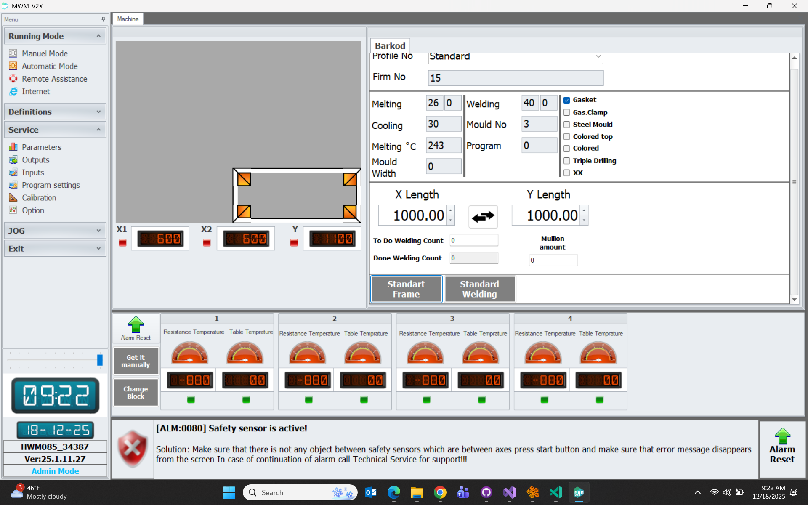
Manual Page : Manuel kaynak işleminin yapıldığı çalışma sayfasıdır.
- Standart Çerçeve: 4 köşe kaynak işlemi için kullanılır.
- U Çerçeve: U şeklinde eşikli çerçeve işlemi için kullanılır.
- Standart Kaynak: 45-45 kesim standart kaynak modu içiçn kullanılır.
- Heritage Kaynak: 45-90 kesilip kertme işlemi yapılmış kaynak modu için kullanılır.Tek taraflı olarak yapılır
- Timberweld Kaynak: 45-90 kesilip kertme işlemi yapılmış kaynak modu için kullanılır.Çift taraflı olarak yapılır
- Elle Al: Aktif edilirse çerçeve boşaltma işlemi yapılmaz. Çerçeve makine içinden operatör tarafından alınır.
- Kalıp Değiştir: Aktif edilirse kalıp değişim için eksenleri kalıp değiştirme konumuna pozisyonlar.
Automatic Page
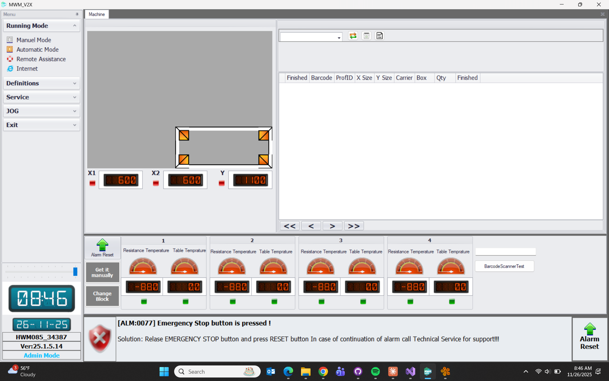
Automatic Mode: Kaynak işlemi için gerekli dataların iş dosyasından alınarak yapıldığı çalışma sayfasıdır. Csv yazılı butonu ile iş dosyası için ilgili sayfa açılır.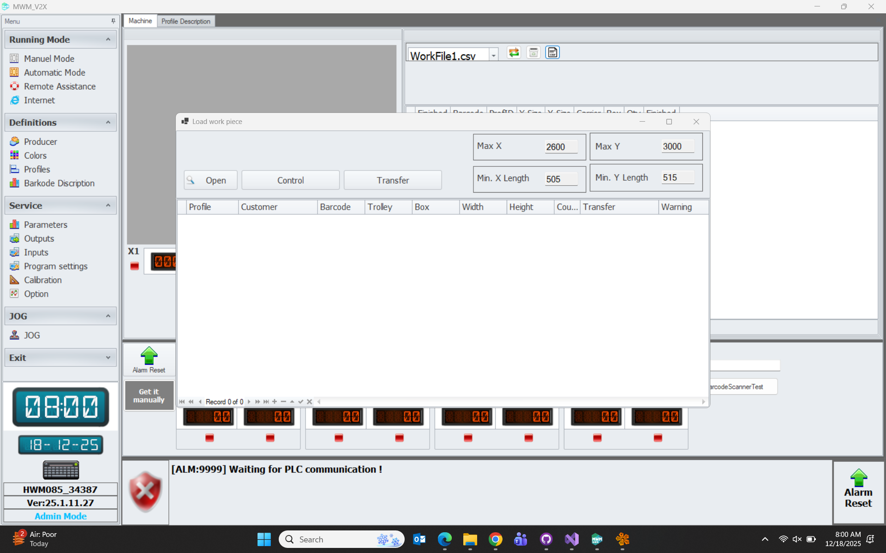
Open diyerek yüklenecek dosya seçilir.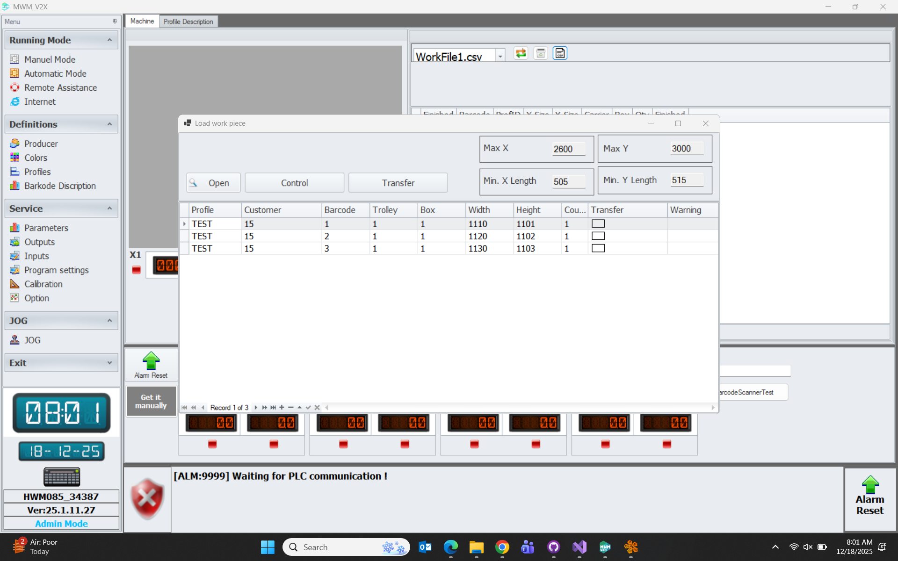
Daha sonra Control ile csv kontrol edilir.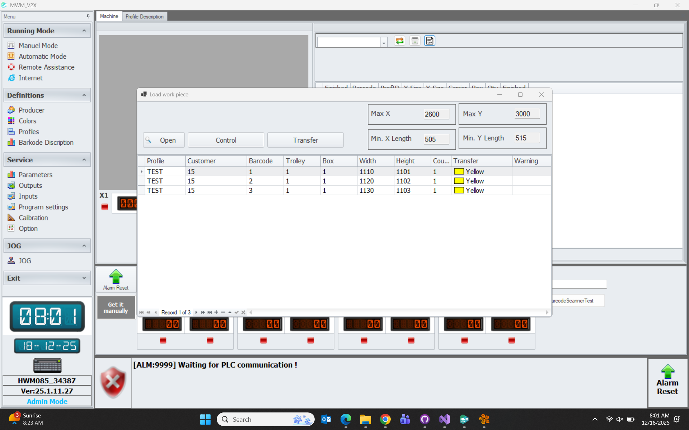
Hata yoksa Trasfer ederek iş dosyasını yüklemiş oluruz.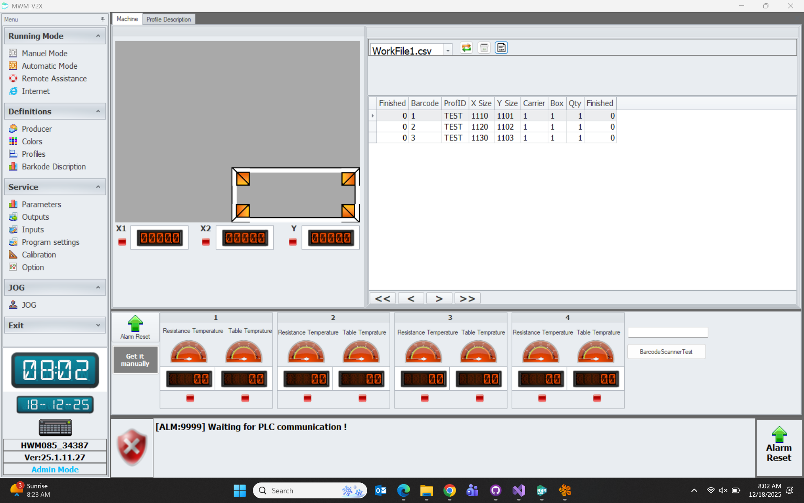
Definations
Profiles
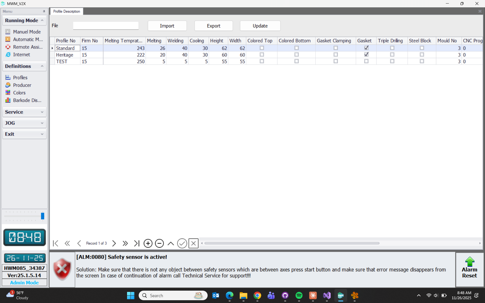
 -Profil tanımlanırın yapıldıgı sayfadır.
ResistanceNo: Rezistans No stün değeri 1 olması durumunda rezistans kademe standart kaynak konumumda çalışır. 0 ise heritage kaynak konumda.
-Profil tanımlanırın yapıldıgı sayfadır.
ResistanceNo: Rezistans No stün değeri 1 olması durumunda rezistans kademe standart kaynak konumumda çalışır. 0 ise heritage kaynak konumda.
Procuder
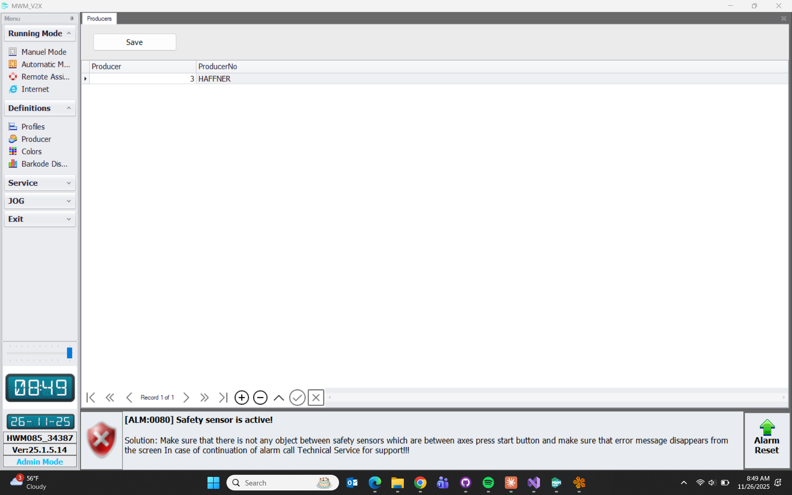
- Profil için üretici bilgisinin eklendiği sayfadır.Color
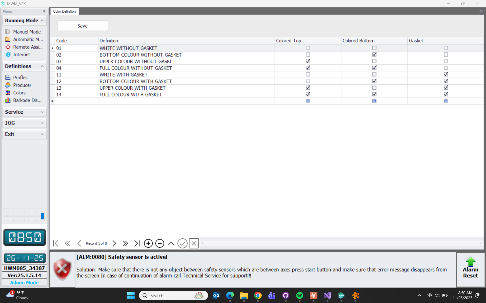
- Profil için renk, conta, alt veya üst bilgilerinin istenilen kod bilgisiyle tanımlandığı sayfadır.Barcode
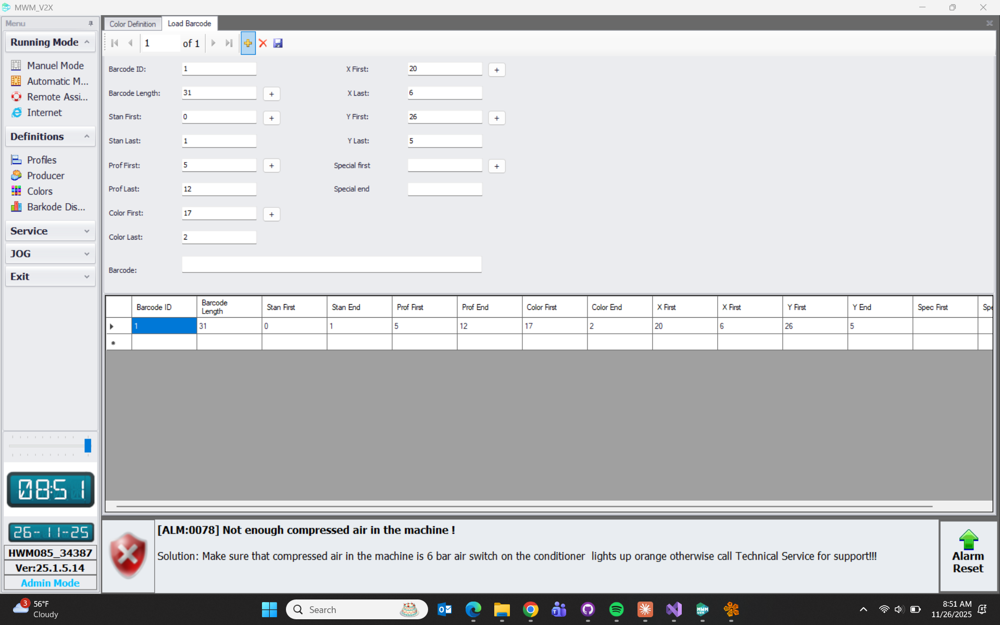
- Barcode Lenght: Barkod da kullılanın karakter uzunlugunu belirtir. - Stan First-Last: Standart başlangıç karakterin aralığını belirtir. - Profil First-Last: Profil kodunun tanımlandıgı karakter aralığı belirtir. - Color First-Last: Renkli bilgisinin tanımladığı karakter aralığı belirtir. - X First-Last: Çerçeve X uzunluk değeri bilgisnin tanımladığı karakter aralığı belirtir. - Y First-Last: Çerçeve Y uzunluk değeri bilgisnin tanımladığı karakter aralığı belirtir. - Special First-Last: Özel karekter kullanılan barkodlar için tanımla yapılması gereken alandır.Standart barkod da boş bırakılması gerekir.Service
Parameters Page
- Makinenin tüm parametrelerinin bulunduğu sayfadır.
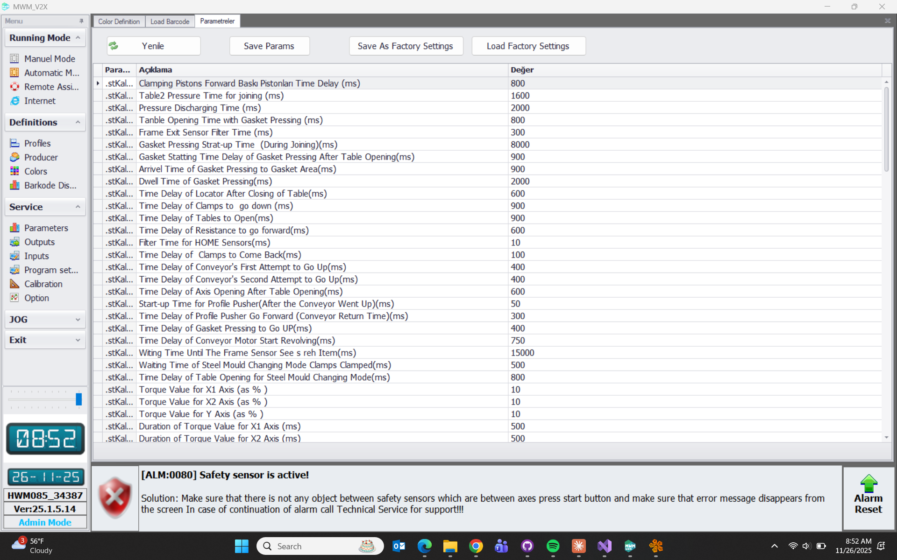
Outputs
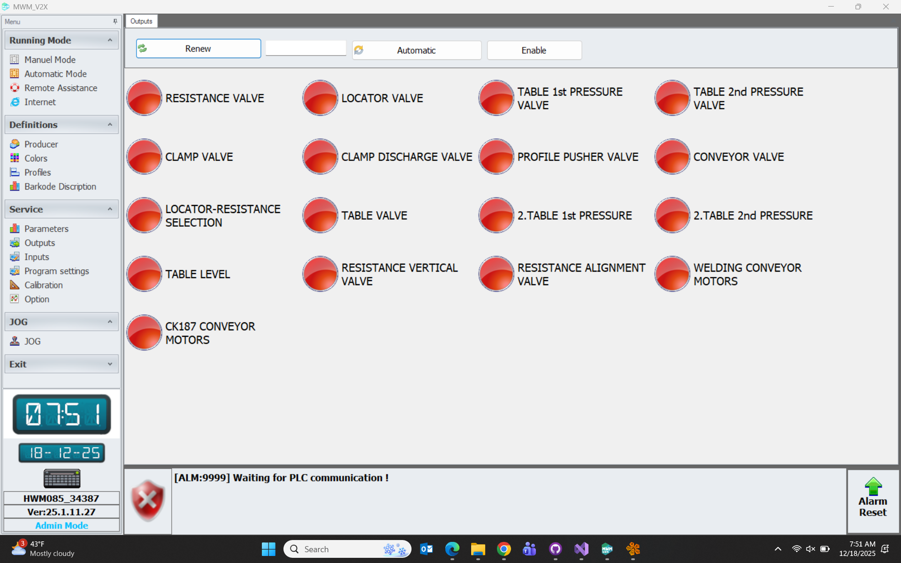
- Sayfada bulunan , Enable butonuna basılır. Ardından hareket ettirmek istediğimiz çıkışın, üzerine basarak o çıkışı çalıştırırız. Ardından tekrar basarak o çıkışı eski konumuna alırız. Automatic butonuna basarak seçili çıkışın girilen süre kadar set-reset otomatik çalışmasını sağlar.Input Page
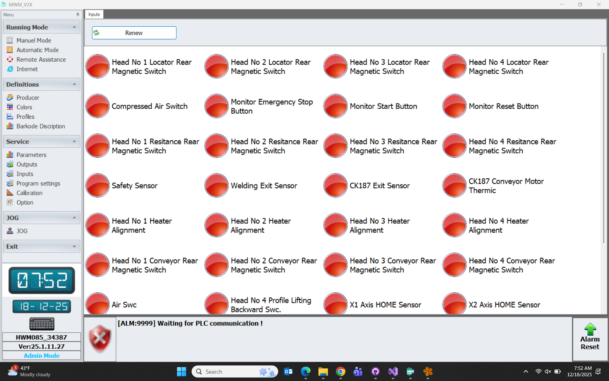
- Makinede bulunan butonların, sensörlerin ve switchlerin bulunduğu sayfadır.Program Settings
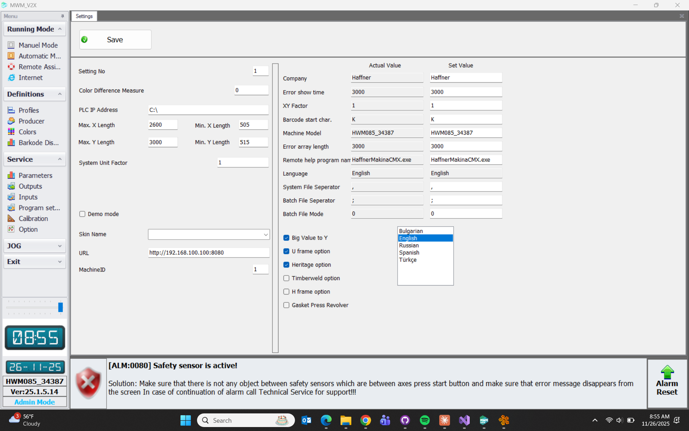
- Makinenin çalışmasına etki edecek ayarların, kaynak türlerinin ve dil seçiminin yapıldıgığı sayfadır. - Setting No: - Color Difference Measure: Renkli profil için girelen değer kadar eksenlerde acılma yapar. - PLC IP: - Max X Len: Kaynak için girelecek maksimum X değeri limiti. - Min X Len: Kaynak için girelecek minimum X değeri limiti. - Max Y Len: Kaynak için girelecek maksimum Y değeri limiti. - Min Y Len: Kaynak için girelecek minimum Y değeri limiti. - System Unit Factor: Makinede kullanılan sayısal degelerin girelen değere bölünmesini ifade eder.(Örn: 1 ise mm, 25.4 ise Inc gibi) - Demo mode: Seçilmesi durumunda makinenin demo olarak çalışır. - URL: CN784 makine ile haberleşme yapılacaksa ilgili IP adresi girilmesi ve CN784 arayüzü ile haberleşmesi sağlanır. - Machine ID: CN784'e hangi kaynak makınesınden data gittiği bilgisi için girelen Id numarasidır.Axis Calibration
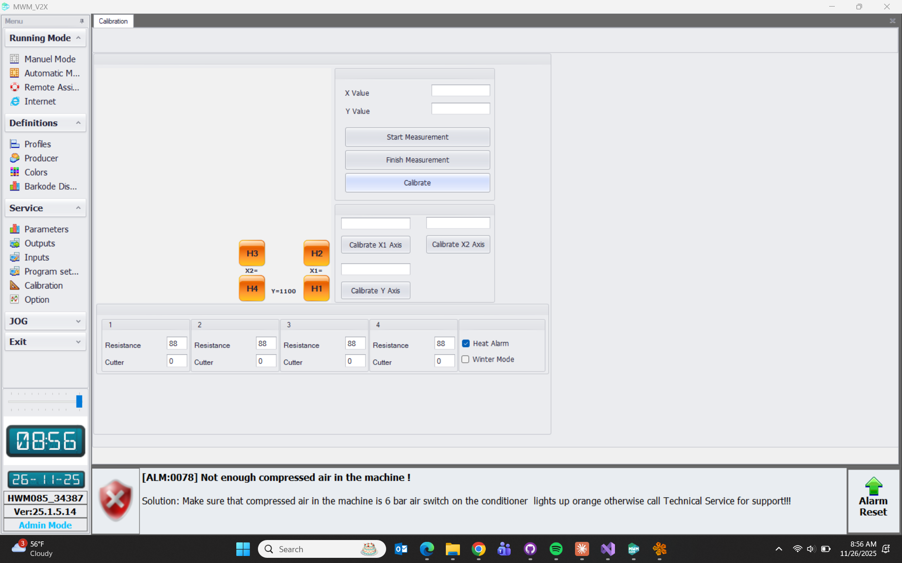
- İlgili eksen, sayfada seçildikten sonra Calibration Value değerine ekseni kalibre etmek istediğimiz değeri gireriz. Sayfanın altında bulunan Calibrate butonuna bastığımızda ekseni istediğimiz değer kalibre edecektir ve kalibre edilen değer Axis Actual Value tarafında gelecektir.
Options
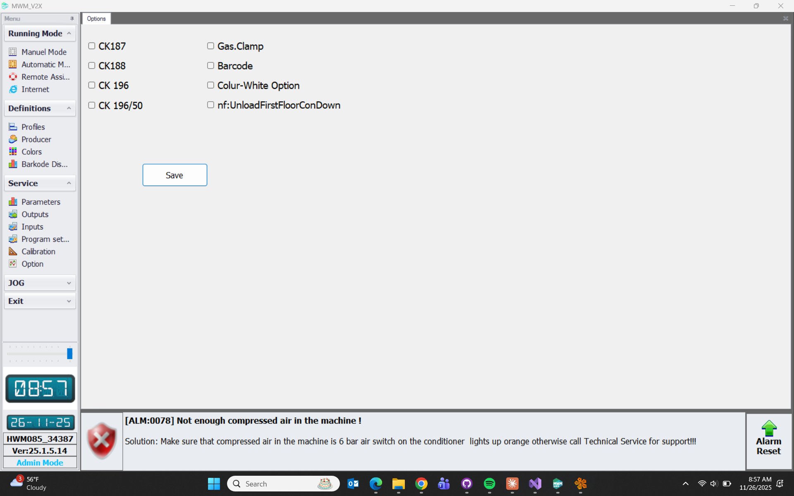
-Makine opsiyonlarının buldunğu sayfadır. - CK187: Kaynak maknesi sonrası sogutma istasyonu varsa bu opsiyon aktif edilir. - CK188: Kaynak maknesi sonrası Üçlü delme istasyonu varsa bu opsiyon aktif edilir. - CK196: Kaynak maknesi sonrası aktarma yapılacak 2. Köşe temizleme makinesi varsa bu opsiyon aktif edilir. - CK196/50: Kaynak maknesi sonrası aktarma yapılacak Makaralı sogutma istasyonu varsa bu opsiyon aktif edilir. - Gas. Clamp: Makinede Conta baski varsa bu opsiyon aktif edilir. - Barcode: Makinede Barkod okuyucu varsa bu opsiyon aktif edilir. - Colour-White: Makinede renkli pim varsa bu opsiyon aktif edilir. - Unload Firt Floor Con Down: Çift katlı kaynak makinesinde 1. katı konveyor reset konumda boşaltır.Jog Page
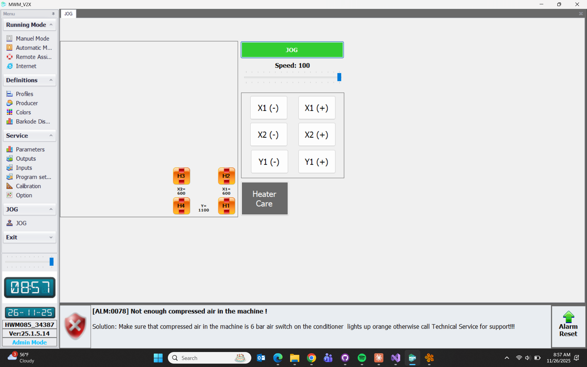
Jog: Sayfada bulunan JOG butonuna, basıldıktan sonra ilgili eksen butonuna basılarak, istenilen pozisyon gitmesi için JOG- ve JOG+ butonları kullanılır.